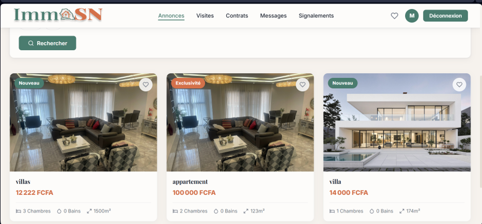

IMMOSN
ImmoSN
Plateforme de gestion immobilière permettant de centraliser les annonces, utilisateurs, visites et contrats.
Pris en charge de l'analyse à la supervision : conception, modélisation PostgreSQL, développement backend Spring Boot et frontend Vue.js, API REST, authentification JWT avec gestion des rôles, tests, Docker, CI/CD et déploiement. Responsabilités : Product Owner, Lead Developer, développeur Full Stack et Backend, DevOps et gestion de la base de données.
Spring Boot · Vue.js · PostgreSQL · API REST · JWT · Docker · CI/CD · Monitoring
